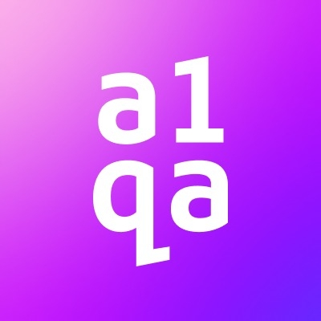

Work Experience:
- Lead end-to-end quality assurance across airline booking and financial workflows as the QA Specialist in the Flights Integration team.
- Perform testing of Amadeus (GDS) integration, validating the complete booking flow from flight search and fare calculation to booking confirmation, ticket issuance, cancellations, refunds, and booking modifications.
- Work on airline supplier integrations such as Fly Arystan and Fly Dubai, ensuring accurate API behavior, correct business logic implementation, and stable system performance.
- Conduct financial module testing, including Incoming/Outgoing operations , Bank Documents , Invoices , payments , discounts, commissions, tax calculations, and financial reporting validation.
- Perform functional, integration, API, regression, and UI/UX testing within Agile workflows, actively participating in Daily Stand-ups, Sprint Planning, Retrospectives, and Reviews.
- Design and manage structured test cases and test suites in Testmo , ensuring high test coverage based on business requirements and technical specifications.
- Execute API testing using Postman , validate data consistency through SQL , and utilize Elastic for log analysis, system monitoring, and issue investigation.
- Detect, document, and track defects using ClickUp , providing detailed bug reports, reproduction steps, and root cause analysis for efficient developer resolution

- Performed functional and UI testing to ensure web application features met business requirements
- Designed and executed test cases and test scenarios based on specifications
- Reported, tracked, and verified defects using Jira
- Conducted regression testing after releases to ensure system stability
- Verified UI/UX consistency across multiple devices and screen resolutions
- Performed functional testing for core web features to ensure requirement compliance
- Created clear and structured test cases and test scenarios
- Identified, documented, and tracked defects using ClickUp
- Collaborated with developers to reproduce, validate, and verify bug fixes
- Executed regression testing after product updates to prevent regressions
- Validated UI/UX consistency across multiple devices and screen sizes
Projects:
QA & Software Testing
C# / xUnit Integration with AI Automated Bug Pipeline
- Developed an automated failure-reporting mechanism in C# / xUnit that dynamically captures runtime exceptions and stack traces.
- Integrated automated tests with an n8n Production Webhook pipeline to asynchronously stream failure logs to Google Gemini LLM.
- Automated end-to-end Root Cause Analysis (RCA) and defect creation, transforming raw C# test assertion failures into formatted, actionable ClickUp bug tasks in real time.
Online Tourism & B2B Platform Testing
- Tested complex B2B booking engine integrations for flights, hotels, and excursions, ensuring seamless reservation flows.
- Verified Extranet platform functionality, focusing on PMS integrations, property preferences, and real-time inventory management.
- Validated multi-currency payment gateways and region-specific data insights for UAE, CIS, and Maldives destinations.
- Performed system infrastructure assessments to ensure compliance with licensing and legal requirements within the hospitality industry.
Logistics & Transportation Platform Testing
- Tested booking, routing, and delivery flows.
- Identified map rendering, geolocation, and localization issues affecting user navigation.
Cross-Platform User Journey & Mobile App Testing
- Tested onboarding, trip creation, and content delivery accuracy.
- Validated API data accuracy and synchronization across web and mobile.
Frontend Development (Live Projects)
Developed and deployed fully responsive web applications:
- Marshaniasexologist.ge — Medical service platform.
- Proactive Group Georgia — Corporate organization website.